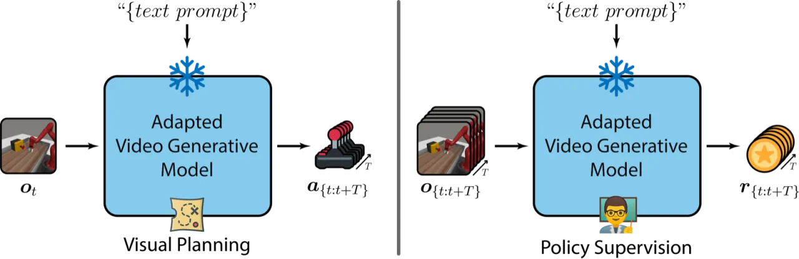
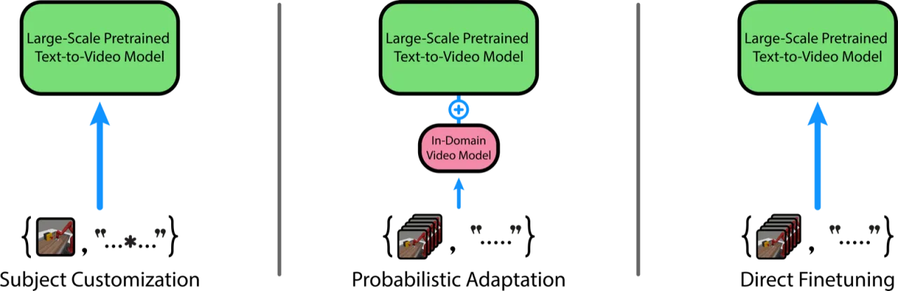
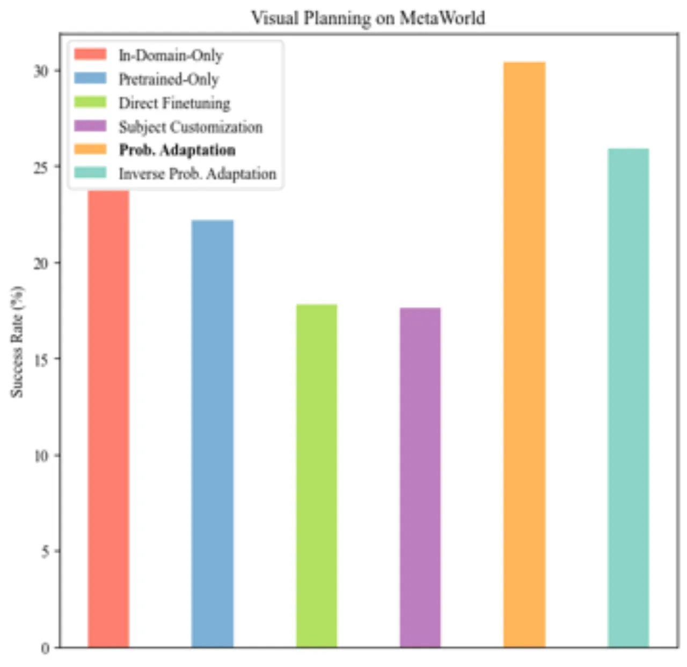
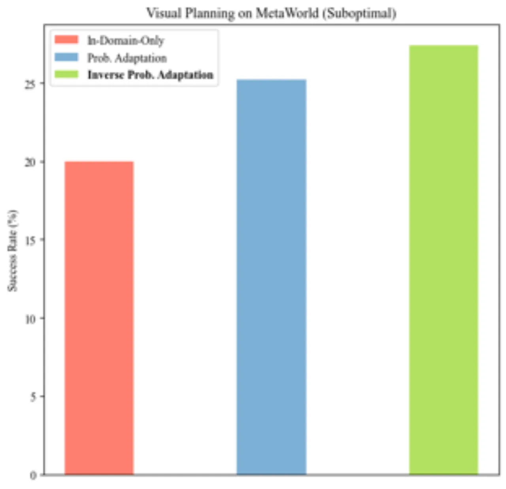

互联网预训练的视频生成模型具有强大的语言对齐能力，但缺乏对特定机器人环境的感知；而仅在少量机器人领域数据上训练的视频模型又难以泛化至新任务。 本文研究了多种将预训练视频模型与领域数据相结合的 adaptation 技术，提出了一种名为 Inverse Probabilistic Adaptation 的新方法， 即使只有次优演示数据（suboptimal demonstrations），也能在 MetaWorld 等机器人基准上成功泛化到新行为。
视频生成模型在机器人领域展现出两种应用路径：作为 visual planner（视觉规划器）或 policy supervisor（策略监督器）。 然而，互联网预训练视频模型与机器人领域数据之间存在根本矛盾：前者拥有强大的语言对齐能力，却缺乏对特定机器人环境的感知；后者则受限于数据规模，难以支持跨任务的自然语言泛化。
"Video generative models demonstrate great promise in robotics by serving as visual planners or as policy supervisors. When pretrained on internet-scale data, such video models intimately understand alignment with natural language, and can thus facilitate generalization to novel downstream behavior through text-conditioning. However, they may not be sensitive to the specificities of the particular environment the agent inhabits."

本文系统比较了四种将领域数据融入预训练视频模型的 adaptation 策略，并在此基础上提出 Inverse Probabilistic Adaptation。 所有方法均使用预训练于互联网数据的视频模型（AnimateDiff）为基础，融入少量机器人操作演示数据。

直接对预训练视频模型的 motion module 进行微调，使用配对的领域内视频数据。这是最直接的迁移方式，能够编码环境特有的动态信息，但需要高质量的配对视频数据，且可能导致灾难性遗忘（catastrophic forgetting），在次优数据下容易崩溃。
仅修改 image encoder 和 text encoder，无需视频数据，只需少量静态图像-文字对。使用特殊标识符（special identifier token）标记特定机器人环境的外观，对数据要求最低，但在运动规划方面的泛化能力有限。实现上采用 DreamBooth，以 20 张静态图像训练，通过 AnimateDiff 完成定制化。
冻结大规模预训练模型，同时训练一个小型领域内视频模型，通过 score composition（分数合成）将两者结合：
ε_adapted(x, c, t) = ε_large(x, c, t) + γ · (ε_small(x, c, t) − ε_large(x, c, t))
其中 γ 是 guidance scale。此方法无需更新大模型参数，融合了大模型的语言对齐能力和小模型的环境特异性知识。
翻转 score composition 中大模型与小模型的方向，以领域内小模型为"基础"，利用大模型的分数引导其向更具语言对齐性的方向演变：
ε_inverse(x, c, t) = ε_small(x, c, t) + γ · (ε_large(x, c, t) − ε_small(x, c, t))
这一简单的方向翻转使得方法对次优演示数据更具鲁棒性——当领域数据质量低下时，大模型提供的先验知识可以纠偏，从而避免小模型过拟合到次优行为上。
实验在 MetaWorld 基准的 9 个机器人操作任务上进行，分别评估两种应用路径：Policy Supervision 和 Visual Planning。 所有方法均以统一配置进行比较（context window size = 8，stride = 4，noise level = 100），基线为 Vanilla AnimateDiff（无 adaptation）。
在 Policy Supervision 设置下，适配后的视频模型对机器人执行帧进行 text-conditioned 评分，作为奖励信号训练策略。 结果如下表（成功率，越高越好，所有 9 个任务的平均值及选取任务报告）：
| 方法 | Door Close | Door Open | Window Close | Window Open | Drawer Close | Overall |
|---|---|---|---|---|---|---|
| Vanilla AnimateDiff | 100±0.0 | 31.1±44.0 | 80.0±15.0 | 33.3±47.1 | 34.4±36.2 | 36.2 |
| Direct Finetuning | 100±0.0 | 0.0±0.0 | 0.0±0.0 | 47.8±41.4 | 95.6±7.7 | 37.9 |
| Subject Customization | 95.6±6.2 | 0.0±0.0 | 0.0±0.0 | 60.0±42.1 | 100±0.0 | 28.5 |
| Prob. Adaptation | 100±0.0 | 0.0±0.0 | 0.0±0.0 | 99.2±1.9 | 100±0.0 | 30.8 |
| Inverse Prob. Adaptation | 97.8±3.8 | 65.6±50.8 | 98.9±1.9 | 98.2±2.1 | 100±0.0 | 68.5 |
在 Visual Planning 设置下，适配后的模型合成执行计划的视频，通过逆动力学模型转化为动作。Inverse Probabilistic Adaptation 同样表现最优，在 9 个任务上取得最高平均成功率，并且在次优演示数据场景下成功率仍保持稳健（优于 Direct Finetuning 大幅下降的表现）。

额外实验评估了当只有次优演示数据（suboptimal demonstrations，即随机策略采集的）可用时各方法的表现。 Direct Finetuning 的整体成功率大幅下降，而 Inverse Probabilistic Adaptation 仍保持稳健，成功率接近使用最优演示数据的情况。 这说明大模型先验可以有效纠正次优领域数据带来的偏差。

在策略监督（Policy Supervision）的 continuous control 设置（Dog 和 Humanoid 环境，来自 DeepMind Control Suite）上进行了消融实验，使用 Episode Return 作为评估指标（3 个 seed 取平均）：
论文明确指出，in-domain 视频数据规模有限（仅选取少量任务演示），这限制了模型对完全未见任务的泛化能力。 实验范围局限于 MetaWorld（桌面操作）和 DeepMind Control Suite（连续控制）两个仿真环境，尚未在真实机器人硬件上验证。
论文使用 Fréchet Video Distance (FVD) 衡量视频生成质量，但明确指出 FVD 得分与下游机器人任务成功率之间的相关性有限——高 FVD 的视频模型不一定对应高任务成功率，反之亦然。这说明视频生成质量与机器人执行效果之间存在 semantic gap。
Inverse Probabilistic Adaptation 依赖 guidance scale γ 来平衡大模型先验与领域小模型，不同任务、不同数据质量下最优 γ 可能存在差异。论文虽展示了默认参数下的稳健性，但未系统探究 γ 的敏感性。
在 Visual Planning 路径中，视频帧需要通过逆动力学模型（inverse dynamics model）才能转化为动作。这一附加模块引入了额外的误差来源，且当生成的视频帧过于超出训练分布时，逆动力学模型可能无法有效预测合理的动作序列。论文指出，仅靠视频规划指标（如 FVD）不足以预测任务成功率，需要超越视频生成质量本身的评估。